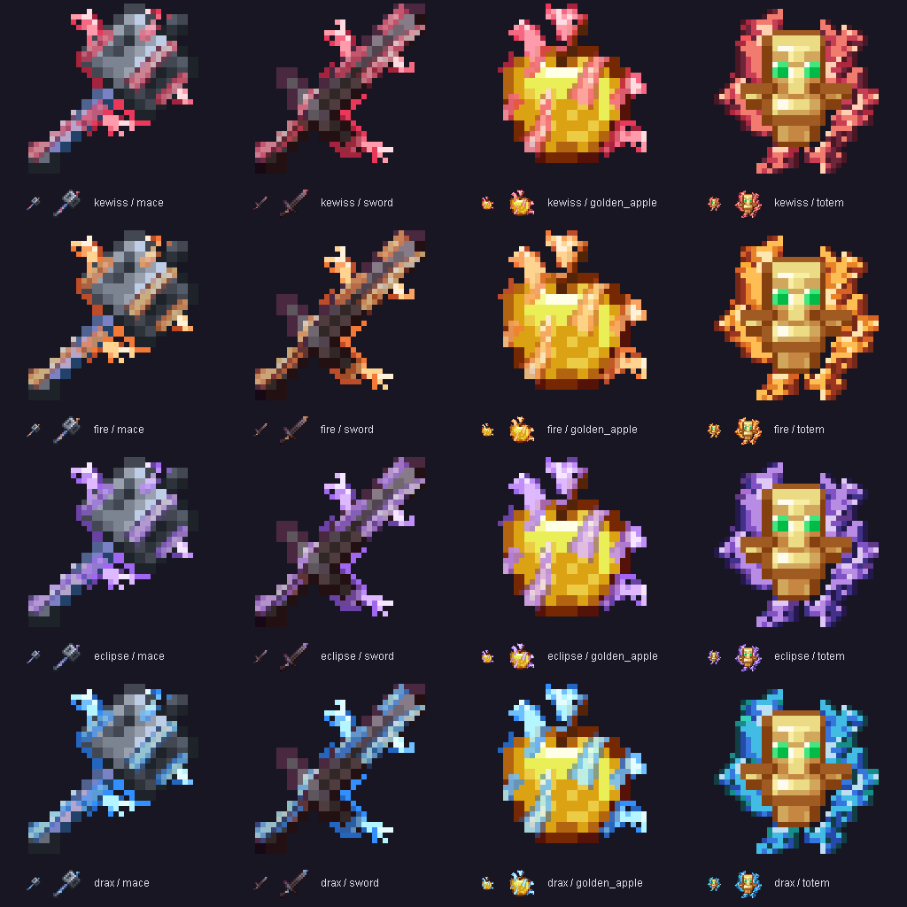

Fire through the weapon
Flames cross the blade and weapon head. Hot lightning follows, with rooted curls around the edges.
KewissTxT 1.36 Ready for your next session
Animated weapons, precise effects, and colors that feel like you. Built by Draxion & Kewisdis for Minecraft Java.
Choose a quiet starfield or passing meteors. Motion and your saved sky stay under your control.
// FEATURES
Familiar Minecraft materials. A whole new energy. Choose the effects you want, and keep control of every detail.
Flames cross the blade and weapon head. Hot lightning follows, with rooted curls around the edges.
White type, themed shadows and click-responsive motion. Try the keys and mouse buttons above.
Four weapon themes. Independent apple and totem colors, rainbow, and custom hex pairs in game.
Keep the original shape and material. Animation OFF restores the clean item.
Independent switches and saved settings. Try the full collection of detailed previews.
Open the full effects lab ↗// LIVE TEXTURES
Real pack artwork, live on the flight deck. Fine-tune the motion, slide between original and animated, and save a setup you can come back to.
Loading the texture…
Try the presets or rainbow. Custom body and tip hex colors are available in the mod.
Meet your crew
A little ice. A little fire. Pick an orbit, try a creator loadout, or find us on YouTube.
// VERSIONS
A few steps that brought the pack here. The latest download includes all of them.
Growing tongues and forked lightning around familiar materials.
96 poses192 weapon poses and a faster 1.2-second flame pulse.
192 posesLonger curls, splitting tips and traveling electrical leaders.
4 themesFlames across the weapon, fuller apples and independent consumable palettes.
Custom hex colors// SHOWCASE

// INSPECT
Drag the animated item to turn it. Choose a pose and watch the flame keep moving.
// PLAY
Thread your pilot through the asteroid gates. Click, tap or press Space to boost. Choose your pace; each mode keeps its own best score on this device.
Click or press Space to start
// INSTALL
Get kewisstxt-1.36.0.jar. Use Minecraft Java 1.21.11, Java 21+ and Fabric Loader 0.18.4+.
Replace the older KewissTxT JAR in your active instance’s mods folder and restart Minecraft. Required Fabric API modules are bundled.
Press Right Shift or type /kewisdistxt. Choose your settings and Apply. Keep the standalone ZIP disabled when using the mod.
// FAQ
The mod includes settings, HUD, sounds, combat effects and live animations. The standalone ZIP supplies animated textures without Fabric or the settings interface.
This release targets Minecraft Java 1.21.11. The mod needs Fabric Loader 0.18.4+ and Java 21+. Required Fabric API modules are bundled.
Open Right Shift → Textures. Each item has its own palette. For custom hex pairs, open Custom animation colors, choose Use colors, then Apply.
Yes. Use the individual animation and effect switches, then Apply. Pack disabled unloads the managed resources. Original weapon materials and shapes stay available.
KewissTxT is client only. It changes visuals, sounds and your HUD, without a server installation. Follow your server’s rules for client mods.
The complete explosion, sweep, HUD, cobweb, fire and audio previews remain in the full effects lab.
Your next session, with a little more KewissTxT.
↓ Download KewissTxTOr get the standalone texture pack↑ ↓ move · Enter run · Ctrl K open anywhere
KewissTxT / Observatory
A pale river of stars above a quiet, blue-lit world.